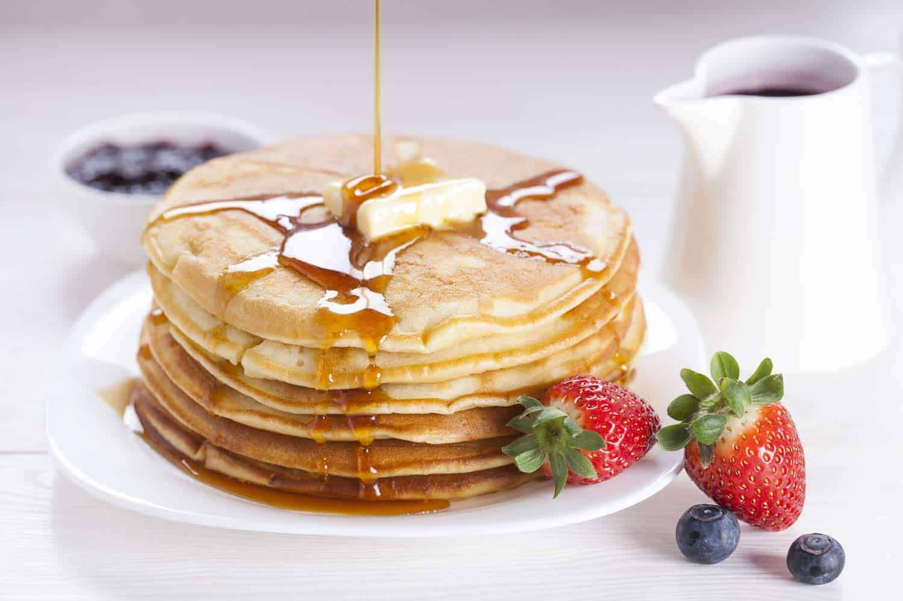

.png) Panqueques!
Panqueques!

¿Te gustaría saber cómo hacer panqueques perfectos, ricos, esponjosos y muy fácil?
Pues esa es la receta de hoy, unos deliciosos panqueques que disfrutarás sin cansarte, porque te aseguramos que quedan estupendos.
Ingredientes:
-
130 g o 1 taza de harina común todo uso
- 1 huevo
- 2 cucharadas de azúcar
- 2 cucharadas de aceite de girasol
- ¾ de taza de leche entera
- 1 pizca de sal
- ½ cucharada de polvo para hornear o levadura química
- ½ cucharadita de esencia o extracto de vainilla opcional
Pasos:
- En un recipiente vertemos todos los ingredientes y mezclamos hasta lograr una masa homogénea, sin grumos, si lo hacemos con un batidor eléctrico será mucho más rápido, debe quedar con una consistencia entre líquida y espesa.
- El siguiente paso es colocar una sartén antiadherente al fuego medio bajo, cuando esté caliente vierte una cucharada grande o cucharón de la mezcla trata de que quede lo más redondeado posible.
- Cuando empiecen a salir burbujas en la superficie y aparezcan los primeros huequitos con una espátula dale vueltas y cocina por otros 30 segundos.
- Repite el mismo procedimiento hasta terminar con toda la mezcla, deben darte para unos 7 u 8 panqueques aproximadamente.
- Si no quieres preparar toda la mezcla puedes reservarla hasta 24 horas en la heladera. Al terminar acompaña con miel, jarabe, caramelo líquido, o lo que prefieras.
.